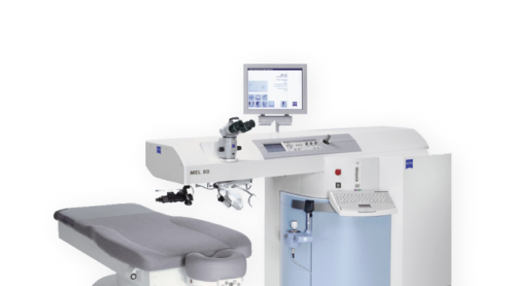
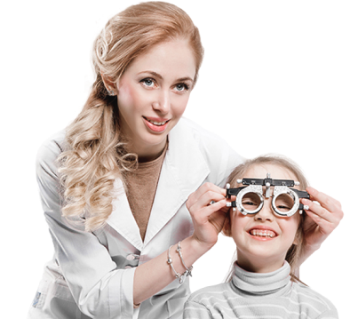
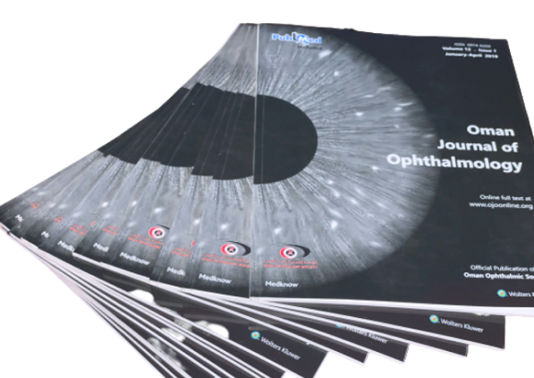
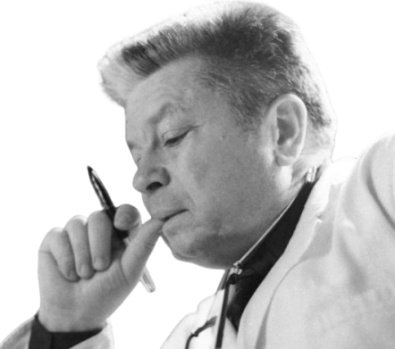

О клинике
ООО Глазная клиника «ЛЕНАР» им. академика С.Н. Федорова — это оборудованные по мировым стандартам медицинские учреждения, оказывающие полный объем офтальмологических услуг.
Основываясь на традициях академика С.Н. Федорова, мы предлагаем эффективные и доступные медицинские услуги по диагностике и лечению глазных заболеваний. В своей работе мы применяем новейшие мировые технологии, соответствующие медицинским стандартам. Мы помогаем всем категориям населения улучшить качество их жизни, восстановить утраченную трудоспособность, обрести уверенность в себе и гармонию с окружающим миром.
Команда профессионалов
Наш коллектив — это 90 специалистов, 55 из которых относятся к медицинскому персоналу. Операции проводятся ведущими российскими офтальмохирургами, прошедшими специализацию в ФГАУ МНТК "Микрохирургия глаза" им. академика С. Н. Федорова Министерства здравоохранения Российской Федерации.
Технологии для всех
Идея академика С. Н. Федорова «высокие технологии на периферии» является одним из приоритетных направлений клиники, в рамках которого мы осуществляем работу выездной бригады. Новым детищем глазной клиники является мобильная клиника – два полноценных передвижных центра: диагностический и операционный. Теперь жители отдаленных регионов имеют возможность получить качественные офтальмологические услуги.

ОМС
С 2012 г. Глазная клиника «ЛЕНАР» вступила в Территориальную программу «Обязательного Медицинского Страхования», ныне действующую на территории Ставропольского края и Кабардино-Балкарской Республики. В рамках Программы мы оказываем комплекс услуг по консервативному лечению детского зрения, а также проводим операции по поводу катаракты и глаукомы у пациентов старшего возраста.
Специальные условия
В рамках специальных условий для отдельных категорий граждан Глазная клиника «ЛЕНАР» им. академика С. Н. Федорова предлагает пенсионерам и инвалидам по зрению более выгодную стоимость комплексной диагностики зрения, а для учащихся и студентов действуют специальные ценовые условия.
Социальная политика
С первых дней работы в клиниках проводится социально ориентированная политика. Благотворительные акции, посвященные Дню защиты детей, в честь Дня Победы, памяти Федорова. Учредители и специалисты клиники стремятся выполнить ещё одну задачу – повысить культуру отношения людей к себе и своему здоровью.

Научная деятельность
С момента основания и до сегодняшнего дня успешная деятельность клиники «ЛЕНАР» им. академика С. Н. Федорова подразумевает не только практическую, но и научную работу в области офтальмологии.

Приверженность принципам
Претворяя в жизнь идеи академика С. Н. Федорова, мы определили для себя следующие главные принципы работы: уважение к традициям Федорова, честность, профессионализм, абсолютная открытость, развитие персонала и, главное, уважение к пациенту.

Вехи истории
1997 19 июля
Открытие Глазной клиники «ЛЕНАР» в г. Нальчике, Кабардино-Балкарская Республика.
1997 19 ноября
Торжественное открытие Глазной клиники «ЛЕНАР» в г. Нальчике с участием академика С. Н. Федорова, способствовавшего созданию в нашей стране первого частного медицинского учреждения нового поколения, где пациентам предлагалось комплексное лечение зрения.
{kind=link}
{kind=link}
{kind=link}
2000 февраль
Регистрация фирменного наименования «ЛЕНАР».
Сегодня
История Глазной клиники «ЛЕНАР» им.акад. С. Н. Федорова продолжается...